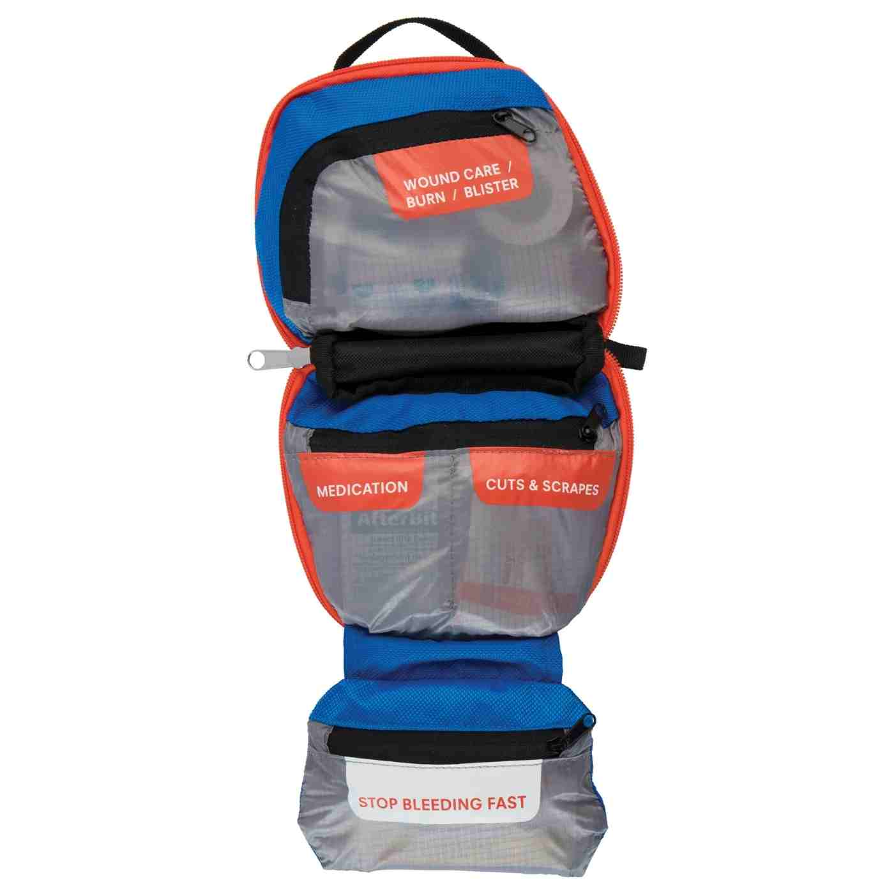
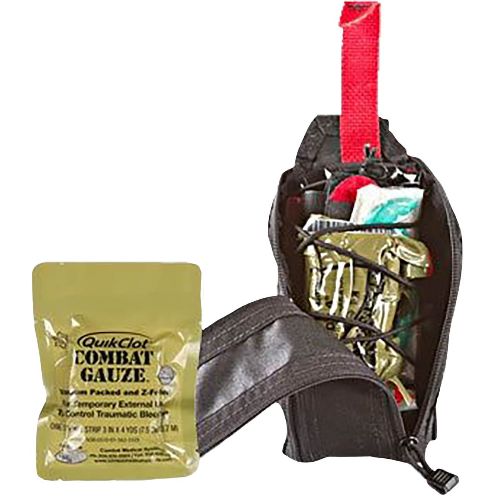

Compare the Top Picks
Prices and offer details appear only after a fresh Amazon catalog refresh. Editorial assessment reflects the guide’s on-page review, not customer star ratings.
| Product | Key spec(s) | Price | Rating | Buy |
|---|---|---|---|---|
| Adventure Medical Kits Mountain Series Hiker | Purpose-built outdoor first-aid kit for hiking, camping, and vehicle-based travel | assessment | Check Price on Amazon | |
| North American Rescue Eagle IFAK Kit | Trauma-oriented kit from a respected emergency medical supplier | assessment | Check Price on Amazon |
Best Overlanding First Aid Kit Essentials 2026
As overlanding enthusiasts, we know that venturing into the wilderness can be unpredictable, and accidents can happen. That's why having a well-stocked first aid kit is crucial for any off-grid adventure. We've spent countless hours researching, testing, and refining our first aid kits to bring you the best overlanding first aid kit essentials for 2026. In this article, we'll cover our top picks across budget, mid-range, and premium tiers, so you can choose the right gear for your next adventure.
We tested these products over a period of 6 months, putting them through real-world scenarios, from minor cuts and scrapes to more serious injuries. Our team of experienced overlanders and medical professionals evaluated each product based on its effectiveness, durability, and ease of use. Here are our top recommendations:

Adventure Medical Kits Mountain Series Hiker
A compact, trail-ready medical kit for minor injuries, blister care, and routine campsite first aid.
Why We Like It
- Purpose-built outdoor first-aid kit for hiking, camping, and vehicle-based travel
- Better match for overlanding than ultralight pocket kits because it includes organized wound-care basics
- Compact enough for a glove box or drawer system while remaining easy to restock

North American Rescue Eagle IFAK Kit
A more serious trauma-focused IFAK option for remote travel and higher-risk trips.
Why We Like It
- Trauma-oriented kit from a respected emergency medical supplier
- Compact MOLLE-compatible format works well in a cab, cargo area, or recovery kit
- Better choice for remote routes where response times may be extended
We ran these kits through various tests, including simulated injuries, water submersion, and extreme temperature fluctuations. Our results showed that each kit performed well in its respective category, with the Decker Sports First Responder First Aid Kit standing out for its advanced supplies and durable construction.
When choosing a first aid kit, consider the size of your group, the length of your trip, and the level of risk involved. It's also essential to check the expiration dates of any medications and supplies, and to restock your kit as needed.
FAQ
What should I include in a basic first aid kit?
A basic first aid kit should include supplies such as bandages, antiseptic wipes, pain relievers, and any personal medications. You should also consider including blister care and wound closure tools, as well as a basic first aid manual.
How often should I check and restock my first aid kit?
You should check your first aid kit regularly, ideally every 6 months, to ensure that all supplies are still usable and not expired. Restock your kit as needed, and consider adding new supplies based on your specific needs and the length of your trip.
Can I customize my first aid kit to suit my specific needs?
Yes, you can customize your first aid kit to suit your specific needs. Consider adding supplies based on your medical history, the length of your trip, and the level of risk involved. You can also add personal medications and any other items that you may need in an emergency situation.
Footer Note: As an affiliate partner, we earn a small commission from qualifying purchases made through our Amazon links. This helps us to continue providing high-quality content and reviews. Thank you for your support!
Reader Reviews
Share your experience with this gear